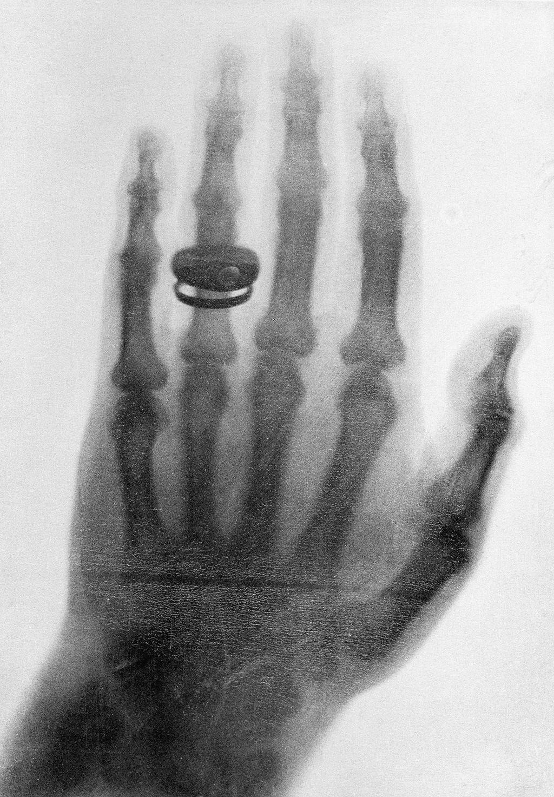
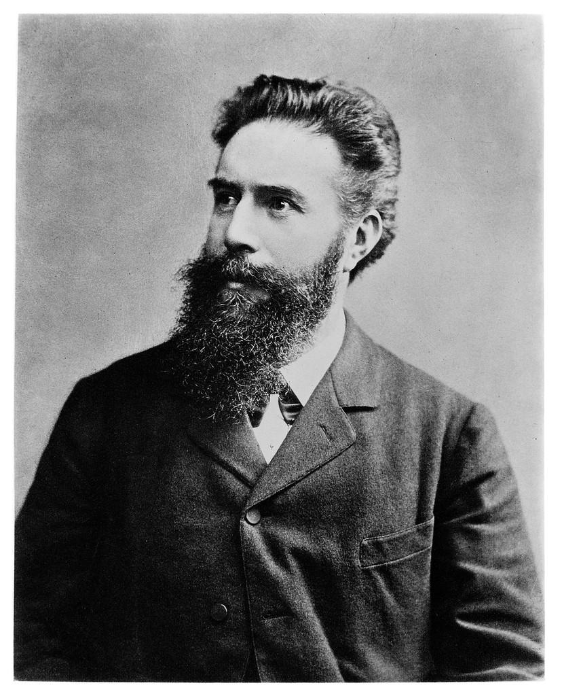
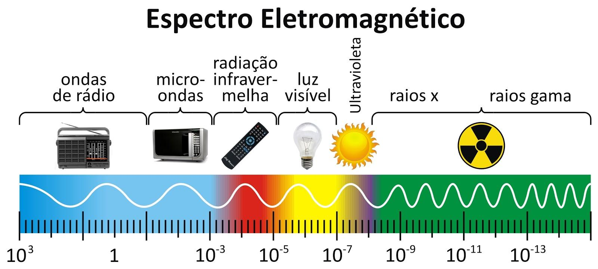

O mundo que não podemos ver
Os Raios X são ondas eletromagnéticas capazes de atravessar diferentes materiais e revelar estruturas que não conseguimos enxergar a olho nu. Sua descoberta transformou a ciência, a tecnologia e principalmente a medicina.
História dos Raios X

Os Raios X foram descobertos em 8 de novembro de 1895 pelo físico alemão Wilhelm Conrad Röntgen, durante experimentos com tubos de raios catódicos. Ele percebeu que uma tela fluorescente emitia luz mesmo quando o equipamento estava coberto.
Como não sabia exatamente o que havia descoberto, chamou a radiação de Raios X, utilizando a letra X para representar algo desconhecido. A descoberta revolucionou a medicina, pois permitiu observar estruturas internas do corpo sem a necessidade de cirurgia.
Cientista e sua biografia

Wilhelm Conrad Röntgen (1845–1923)
Wilhelm Conrad Röntgen foi um físico alemão, nascido em 27 de março de 1845. Estudou engenharia mecânica e Física, concluindo seu doutorado na Universidade de Zurique, em 1869.
Ao longo de sua carreira, trabalhou como pesquisador e professor universitário. Sua maior contribuição foi a descoberta dos Raios X, em 1895. Em reconhecimento ao seu trabalho, recebeu o primeiro Prêmio Nobel de Física, em 1901. Morreu em 1923.
Características dos Raios X

Os Raios X são ondas eletromagnéticas transversais, assim como a luz visível e as ondas de rádio. Não precisam de um meio material para se propagar e viajam no vácuo à velocidade da luz.
| Característica | Descrição |
|---|---|
| Tipo | Onda eletromagnética |
| Natureza | Transversal |
| Velocidade | Aproximadamente 300.000 km/s no vácuo |
| Comprimento de onda | Entre 0,01 e 10 nanômetros, aproximadamente |
| Frequência | Entre 3 × 10¹⁶ e 3 × 10¹⁹ Hz, aproximadamente |
| Energia | Elevada |
| Ionização | É uma radiação ionizante |
Comprimento de onda
É a distância entre dois pontos equivalentes de uma onda. Nos Raios X, esse comprimento é muito pequeno.
Frequência
Representa a quantidade de oscilações por segundo, medida em Hertz (Hz). Os Raios X possuem frequência elevada e, consequentemente, alta energia.
Capacidade de penetração
Conseguem atravessar diferentes materiais, mas são absorvidos em quantidades variadas. Os ossos absorvem mais Raios X que os tecidos moles, permitindo formar imagens com contraste.
Radiação ionizante
Possuem energia suficiente para retirar elétrons dos átomos, podendo provocar alterações nas células. Por isso, sua exposição deve ser controlada.
Aplicações tecnológicas
Segurança
São utilizados na inspeção de bagagens e encomendas em aeroportos, permitindo identificar objetos escondidos sem precisar abrir as malas.
Indústria
Permitem identificar rachaduras, falhas e defeitos internos em peças, soldas e estruturas metálicas, contribuindo para o controle de qualidade.
Pesquisa científica
São utilizados para estudar a estrutura dos cristais e a organização dos átomos nos materiais, contribuindo para descobertas científicas.
Indústria alimentícia
Podem identificar objetos estranhos em alimentos embalados, ajudando a garantir a segurança e a qualidade dos produtos.
Aplicações na saúde e medicina
Radiografia
É utilizada para identificar fraturas, alterações nos ossos e problemas pulmonares por meio de imagens do interior do corpo.
Tomografia computadorizada
Utiliza Raios X para produzir imagens detalhadas de órgãos, tecidos e ossos, ajudando no diagnóstico de diversas doenças.
Mamografia
É um exame que utiliza Raios X para observar as mamas e identificar alterações, incluindo possíveis sinais de câncer.
Radiografia odontológica
Permite observar dentes, raízes e estruturas da boca, auxiliando na identificação de cáries e outros problemas odontológicos.
Fluoroscopia
Produz imagens em tempo real, permitindo que os profissionais acompanhem determinadas estruturas e procedimentos médicos.
Radioterapia
Utiliza Raios X de alta energia para atingir células tumorais, sendo um dos recursos empregados no tratamento do câncer.